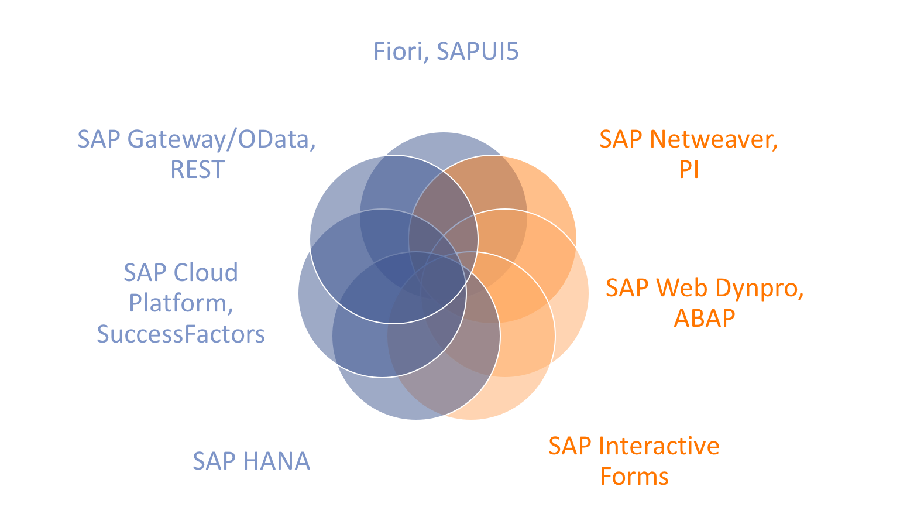

UI5con@SAP 2017 - Volker Buzek
j&s-soft GmbH
SAP-Consultancy with focus technology & innovation
canvas → context → base64-String
Promise.resolve().then( function() {
return navigator.getPicture() // or whatever returns base64
).then( function(sBase64) { // manipulate image data
return promisifiedAndManipulatedImage();
}).then( function(sBase64Modified) { // set it to UI5 control
this.byId("idImage").setSrc(sBase64Modified);
}).catch(function (oError) { // never forget -> debugging!
jQuery.sap.log.error(oError);
})promisifiedAndManipulatedImage: function(sBase64) {
return new Promise(function (fnResolve, fnReject) {
// wrap img.onload as promise
var oImage = new Image();
oImage.src = sBase64;
oImage.onload = function () {
// draw image data to an (invisible) canvas
this.oContext.drawImage(this); // this.oCanvas needs to already live
// retrieve ready-to-manipulate pixels
var oImgData = this.oContext.getImageData();
// iterate over every pixel in the image
oImgData.data.map(function (data, i) {
// MANIPULATION HERE...
}
this.oContext.putImageData(oImgData);
// desired media-type and quality
fnResolve(this.oCanvas.toDataURL("image/png", 1.0));
}
// ... fnReject for oImage.onerror() etc.
});
}Gaussian blur → Grayscale → FAST → BRIEF|ORB
tracking.jsJSFeattracking.js| scale invariant | quality of matches |
| rotation invariant | multiple matches |
| reflections mirrors "shiny" |
idea:
reference object
→ provide as push-based AR scenario
navigator.watchPosition()
$timestampUI5
control)
onCoordUpdate:$object at $lat+$long?
$object into cameraUI5 control)
navigator.
.* ⚡accuracy
.getCurrentPosition, .watchPosition
☘ GPRS ☔ WLAN
.heading flunky → ☔ VR img placement
web-based AR "framework"
track movement across devices and
project target object
Desktop ←WebSocket→ mobile
Grayscale → Gaussian blur → Canny Edge → Lucas-Kanade
navigator.getUserMedia()requestAnimationFrame(fnProjection)fnProjection =~ oCanvas
.getContext("2d")
.putImageData()
// sender
var oImgData = oCanvas.getContext("2d")
.getImageData(0, 0, oCanvas.width, oCanvas.height);
WebSocket.send(JSON.stringify({oImgData});
// receiver
var oImgData = JSON.parse(oControlEvent.getParameter("data"))
.data;
var oNewImageData = oContext.createImageData(oCanvas.width, oCanvas.height);
_.map(oImgData, function (data, i) { // underscore helper
oNewImageData.data[i] = data;
});
oContext.putImageData(oNewImageData, 0, 0);
on mobile: websockets closed (at will?) on inactivity!
($canvas * 4).rotateClockWise()$canvas to WebSocket.attachMessagecanvas, context(2d), base64-handlingUI5-integrationUI5 & Promises: awesome⇒ rock-solid, production ready
(matching: not)
navigator.getUserMedia)⇒ insufficient tooling, playground only
canvas → intermediate ImageUI5-lifecycle to avoid re-rendering issues⇒ gorgeous nonsense ☺
no idea where someone can take this ☄
Volker Buzek
j&s-soft GmbH
SAP Development Architect Mobility
W: www.js-soft.com
T: @vobu
E: volker.buzek@js-soft.com
M +49.151.649.622.50